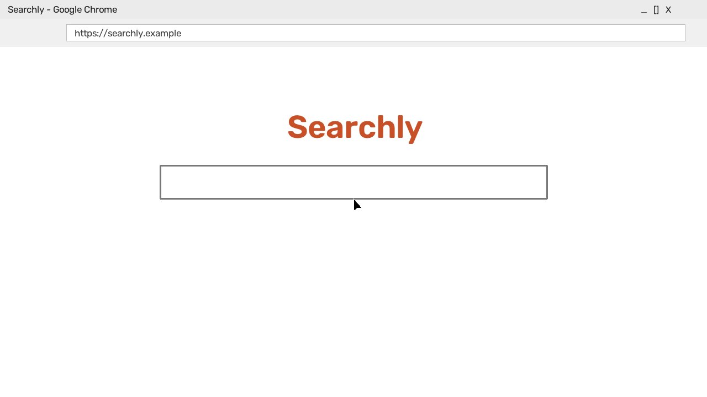
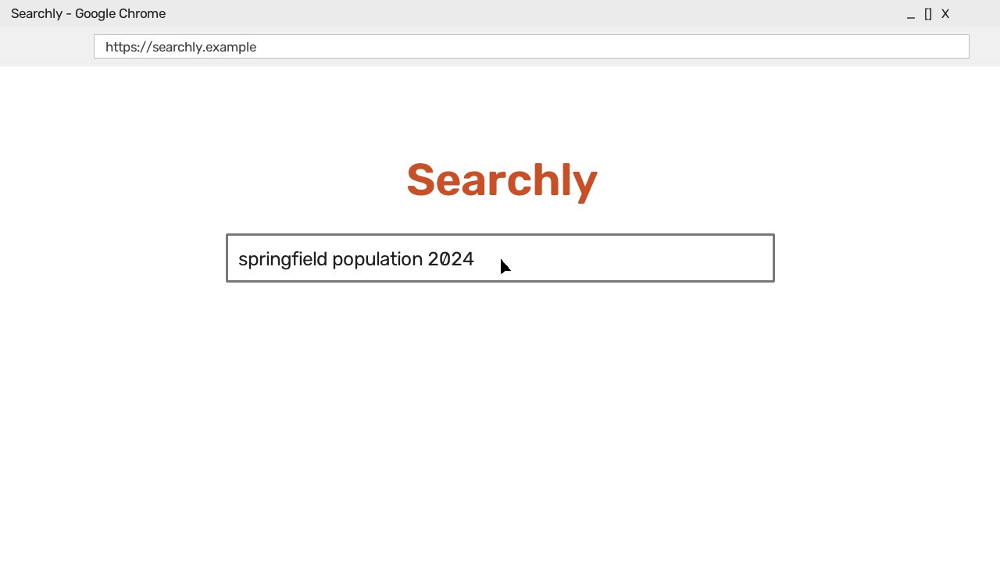
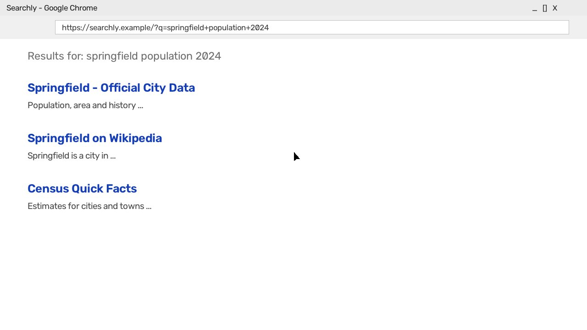
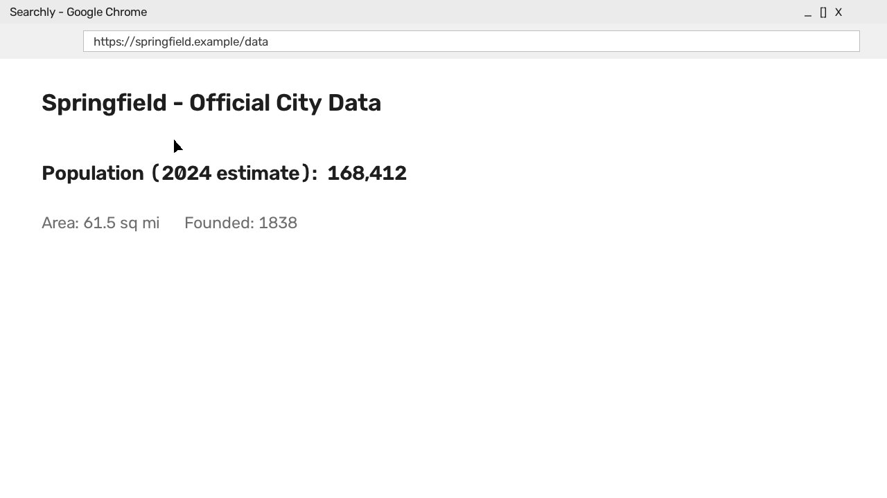
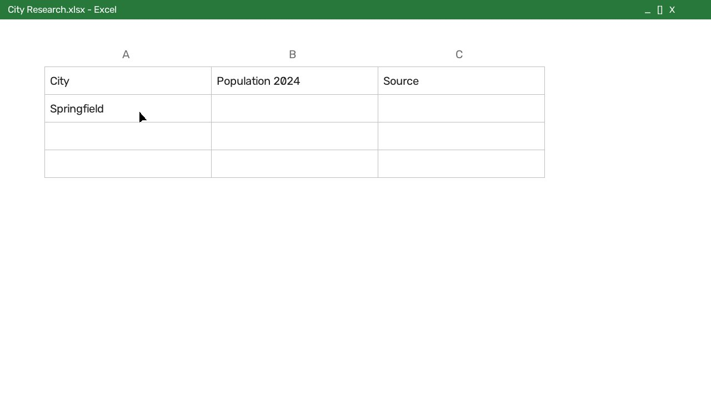
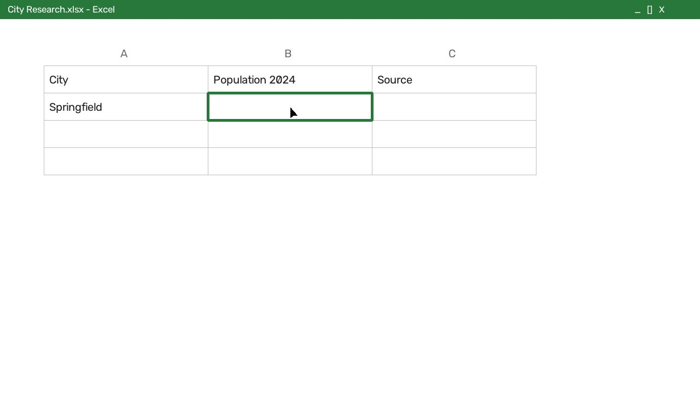
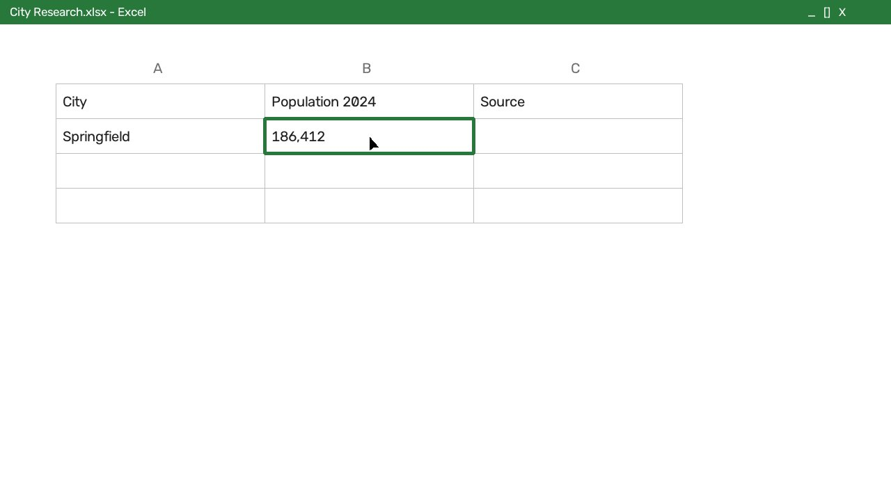

Search for Springfield Population and Enter into Excel
Search for Springfield's population in 2024 on the Searchly website, retrieve the data, and enter it into an Excel spreadsheet.
00:00:23 · 8 steps · 1 need review · Searchly - Google Chrome, Excel · qwen3-vl-2b
The workflow begins by searching for Springfield's population in 2024 on the Searchly website. The results are accessed, and the data is then transferred to Excel. The user enters the population value 186,412 into the appropriate cell in the spreadsheet.
Inputs
population_value e.g. 186,412
file_name e.g. City Research.xlsx
city_name e.g. Springfield
source_url e.g. https://searchly.example/?q=springfield+population+2024
Open questions
The user's action of switching to Excel is confirmed, but is there any indication of a potential error in the switch? The user may have intended to switch to a different application or file.
Step 1 · click · confidence 0.90
Click on the search bar in Searchly
Click on the search bar in the Searchly website to focus on it.
App
Searchly - Google Chrome
Target
Searchly - Google Chrome
Value
Searchly
Expected
The search bar is focused and ready for input.
Screenshots (before / after)

Step 2 · type · confidence 0.90
Type 'springfield population 2024' into the search bar
Type 'springfield population 2024' into the search bar.
App
Searchly - Google Chrome
Target
Searchly - Google Chrome
Value
springfield population 2024
Expected
The search bar contains the text 'springfield population 2024'.
Screenshots (before / after)

Step 3 · press enter · confidence 0.90
Press Enter to execute the search
Press Enter to execute the search query for 'springfield population 2024'.
App
Searchly - Google Chrome
Target
Searchly - Google Chrome
Value
springfield population 2024
Expected
The search results for 'springfield population 2024' are displayed on the page.
Screenshots (before / after)

Step 4 · click · confidence 0.90
Click on the 'Springfield - Official City Data' link
Click on the 'Springfield - Official City Data' link in the Searchly search results to open the page.
App
Searchly
Target
Springfield - Official City Data
Value
Springfield - Official City Data
Expected
The page displays the city's data, including population, area, and founding year.
Screenshots (before / after)

Step 5 · switch_app · confidence 0.90
Switch to Excel application
Switch to the Excel application from the current window.
App
Excel
Target
City Research.xlsx - Excel
Value
City Research.xlsx - Excel
Expected
The Excel window opens with the 'City Research.xlsx' file loaded, and the data from the Searchly page is ready to be entered.
Screenshots (before / after)

Step 6 · click · confidence 0.90
Click on the 'Population 2024' cell for Springfield in Excel
Click on the cell in the 'Population 2024' column for Springfield in the Excel table.
App
Excel - City Research.xlsx
Target
Cell in the 'Population 2024' column for Springfield
Value
186,412
Expected
The cell is selected and ready for input.
Screenshots (before / after)

Step 7 · type · confidence 0.90
Type '186,412' into the selected cell
Type the value '186,412' into the selected cell in the 'Population 2024' column for Springfield.
App
Excel - City Research.xlsx
Target
Cell in the 'Population 2024' column for Springfield
Value
186,412
Expected
The cell contains the value '186,412' and is ready for further actions.
⚠️ Needs review
Check: Typed "186,412" but "168,412" was seen at 00:00:10 (consistency check).
Evidence: The cell in the 'Population 2024' column for Springfield is selected and the user types '186,412' into it. The value is visible in the cell in the next image.
Screenshots (before / after)

Step 8 · type · confidence 0.90
Confirm the value '186,412' is entered in the cell
The user has entered the value 186,412 into the 'Population 2024' cell for Springfield in the Excel table.
App
Excel - City Research.xlsx
Target
Population 2024
Value
186,412
Expected
The value 186,412 is now displayed in the 'Population 2024' cell for Springfield.